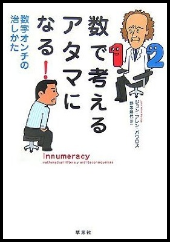

- What It Takes To Be Great
- What It Takes To Be Great 2: AJATT and Malcolm McDowell’s Outliers…wait…
- What It Takes to Be Great 3: Follow-Up
- What It Takes to Be Great 4: Capablanca
- Aim to Fail
- You can have do or be ANYthing, but you can’t have do or be EVERYthing
- How To Accomplish Great Things: Small Victories, Winnable Games
- Why Do People Who Have All the Time in the World Get Nothing Done?
- Skills Resulting From Work Applied Consistently Over time Look Like Genius
- You Are Designed and Destined For Mastery
I’m not sure how directly this relates to AJATT. I mean, it relates. But I’m not sure that it relates to everyone doing AJATT. In fact, I know it doesn’t. But, it is an issue that affects me and that affects some AJATT readers. In fact, now that I think about it, it affects everyone who ever has longish stretches of free time that just seem to slip through their fingers despite the best of intentions going in. So, yeah, it’s relevant.
The Big Question
OK, enough introductizing‚Ķthe question at hand is this: “Why Do People Who Have All the Time in the World Get Nothing Done?” Why is it that you had a whole week to do catch up on your classwork over Thanksgiving Break, but not only did you not finish it, you didn’t even start it?! You didn’t even crack open the book! WHY? All you did was sit on your butt, eat dead, rotting bird and watch every episode of Robot Chicken released to date. And when you ran out of that, you reached for Gilmore Girls. Wow, this post is going to sound sooooo dated in 15 years.
Do we need management? Do we need bosses? Do we need stress or at least eustress to get anything done? Do we need the threat of pain and suffering to get our butts in gear? Do we need something to fear? Is an idle mind Dick Cheney’s workshop? I say yes and no.
If we had been left alone as kids, this would not be an issue. Young kids who have not yet undergone that much processing, and unschooled kids seem to do fine getting stuff done.
OK, but forget about kids. Stupid kids thinking they’re our future. I’m the future, you vertically challenged motherlovers! Let’s bring it back to us. So, why do people who have all the time in the world never get anything done? Why…do people who have all the time in the world never get anything done? WHY do people who have all the time in the world get absolutely nothing done? Chris Rock’s stand-up style is affecting my writing.
Lottery Winner/Windfall Syndrome
I don’t freaking know why. But I have a wacky Khatzumoto hypothesis about it. I call it lottery winner syndrome hype o’thesis.
We all know those stories of lottery winners who, like, were totally poor, and then they won the lottery and overnight became decamillionaires, but then overnight became po’ again. The New Age PD people will spin you a tale about the “Law of Attraction” and how they weren’t a “vibrational match” for the money.
Mmmmyeah. This is what is known in linguistics as “bollocks”. It’s a special kind of bollocks, though, because it’s actually correct at many levels, but it’s bollocks because it’s the same as saying “the Sky Deity is urinating” instead of “it’s raining”, or “Remote Desktop hates me” instead of “I forgot to open port 3389”, or‚Ķyeah‚Ķor that.
What I mean is, we can accurately describe and predict the same phenomena (effect of attitude and knowledge on life experience) without going all southern California about it and trying to sell people a seminar. Did I mention I hate personal development seminars? Yeah, but that’s just my two cents. PD books are cool, though.
Dang, dude, far too many asides. Where were we? Oh yeah — lottery winner syndrome. Yeah, it totally happens, man. Totally. In fact, it happens so often I want to give it a new, more general name: the “windfall syndrome hypothesis“, whereby:
People who have been in a state of impoverishment with respect to a given resource, are very likely to completely misuse and exhaust the resource if and when they abruptly come to have it in plentiful supply.
Corollary: People who gradually acquire more of the resource tend not to do so.
I and two Japanese friends of mine who live nearby have left the so-called “normal” company life that most adults currently live. We work from home. We set our own hours. We are basically free to do whatever we want whenever we want. In the common parlance, “we have a lot of free time on our hands”. We are timewealthy. We timerich, be-arch.
But, for a while there, we weren’t nearly as productive as we want to be. In fact, we had become less productive when free than when we were company serfs (and everything but company work was a side project that had to be done on the commuter train). Dude, there are only three podcasts up right now. I haven’t produced a Dick and Jane comic since my Sony days. KhatzuMemo went a year almost untouched. Fortunately, that’s changing now, due to reasons and discoveries I’ma going to a-discuss-a a-here.
OK, so the windfall hypothesis so far is saying what happens and when it happens but not why. Like so many things, it does come down to psychology, to philosophy, to state of mind, baby (I’m doing the touching-my-temples-with-both-index-fingers thing, and I’m saying “mind” in a near-whisper). State of miiiind, maaan.
Innumeracy

Why? Because of a subtle subspecies of a disease called innumeracy (a great book, by the way). Innumeracy can affect even people who otherwise like numbers and math of the matics. Innumeracy is the reason people will drive across town to Kroger to save 50 cents on roasted peanuts, but will not blink at a $50,000 difference in house price because their being semi-conned into focussing on the low/no-down-payment and the monthly cost of the mortgage (another great book). As if the $50,000 somehow matters less because it’s being siphoned off over time (plus interest, son!).
The innumeracy at work in the windfall syndrome can actually be expressed verbally — without numbers — it is already in the title of this post:
“Why Do People Who Have All the Time in the World Get Nothing Done?”
Can you see it? I’ll point it out for you: “all the time in the world“. This is the innmueracy of large numbers — innumeracy of infinites. Governments use it all the time, wangling a billion dollars here and there. Regular, schooled-and-therefore-innumerate taxpaying folk are so bamboozled that they swallow all these budget tricks.
So, in short the problem is: we (tend to) have a very poor understanding of the concept of infinity: we fallaciously conflate it with any sufficiently large-seeming number. Just like those rags-to-riches-to-rags lottery winners who think that the money is infinite — it could never run out — only to discover that, yes, one hundred million dollars can, in fact, be exhausted.
It’s not just the fault of the lottery winners. The people around them play a role, too. Get considerably richer than your friends and watch their behavior change. You don’t even have to wait for it to be six figures‚Ķjust start making about twice as much money as your friends and watch them act differently; watch them act as if your money is inexhaustible.
Like Cuba Gooding, Jr. once said on Oprah, when you become a millionaire, and an old friend/acquaintance asks you for $10,000 and you say no, and they say that you suck and wealth has changed you‚Ķit’s not you that has changed; it’s them: they never would have asked you for that kind of cash before, but suddenly they act as if you’re a never-ending fountain of no-strings-attached grant money. In fact, they more or less believe you are. (Similar things happen where people who have less steal from people who have more, thinking “it’s so little; they won’t notice”).
Timewealth and Timepoverty
OK, let’s bring it back to time. People¬† who have a lot of free time certainly have a lot more than most. Many salarymen („ǵ„É©„É™„ɺ„Éû„É≥) in Japan have, on a good weekday, maybe two hours of discretionary time — if that. In contrast, someone not living the reeman („É™„ɺ„Éû„É≥/salaryman) lifestyle — even a housewife — arguably has 24 hours a day free, right? Which means they have, say, 12 times as much time as a reeman („É™„ɺ„Éû„É≥). Right?
Wrong. As with money, there is “time tax” in a sense. First of all, we all need to sleep maybe, I dunno, 6 to 10 hours a day to stay healthy and sane. Some people more, some less. So, strike off 8 hours for sleep. That leaves 16 hours. SIXTEEN FREE HOURS! That’s still 8 times more than our fictional reeman („É™„ɺ„Éû„É≥), right?
Wrong. Personal maintenance — eating, showering, getting ready, let’s give it two hours. Which leaves 14 hours, right?
Wrong. Let’s say exercise and travel combined take 2 hours, leaving 12 hours. And then let’s just say “various” other tasks involving care and maintenance of things other than one’s person — housework, childcare, petcare, and play-breaks (since (1) virtually no one can work on something without breaks indefinitely, (2) many people have these kinds of maintenance responsibilities). That leaves 8 hours for some real work.
Eight hours is still a good amount of time. But you know what? It certainly isn’t infinite. My figures are all kind of fudged and estimated and made-up; it’s probably hard to be truly general since except maybe Japanese housewives, people are going to have very unique life patterns. Maybe with some timehacks people can squeeze out an extra two hours, bringing us back to 10.
So, this person with “all the time in the world” is really only 4 to 5 times timericher than a reeman („É™„ɺ„Éû„É≥). In the US, where I’d hazard a guess that regular-a$$ employees have 4 hours a day of truly discretionary time, this means that the timerich are only maybe twice as rich as “regular” folk.
Unlike money, time can’t be created; it can only be “reallocated”. And there’s a hard limit — the day is only 24 hours long for any of us. Add in all that natural overhead (“tax”), and a timerich person just isn’t that rich.
Now, the problem is that not only do many of the timerich think they’re far richer than they actually are, so do the timepoor cling-ons. You know, those people who ask you to do something because “come on, maaan, it’s not like you don’t have the time”. “Why don’t you respond to every email that ever comes into your inbox, be-arch? Come on, man — YOU HAVE THE TIME”. “Back up my files for me! Come on, maaan! You have a terabyte!”. “Buy me a house, Bill Gates — come on, man — YOU HAVE THE MONEY” (actually, he doesn’t: a lot of that net worth is stock and there are rules preventing him from selling it‚Ķplus, if he were to sell it, it could be taken reeeeeeeeeeeeeeeeeeeeeeeeeeeeeeeeally badly).
So, the timerich are not only bombarded by infinite requests for their “infinite” time, they also put infinite demands upon themselves. (And, like I said, a timerich person is anyone who has considerably more discretionary time than the so-called norm; many people experience sudden temporary timewealth in forms like Thanksgiving Break and summer holidays, even public holidays). Not because they are stupid but because they are in fact following a code of ethics. By this simple, invisible code, it would be wrong for an infinitely wealthy person to be stingy. It would be wrong for a person who has infinite time to not do infinitely good work: one’s fundamental sense of morality would not allow it.
According to David Allen of Getting Things Done, this is why people who already have too much to do often keep taking on more stuff — without some kind of management system to tell them otherwise, they may feel busy and burnt-out, but they have no way of telling for certain that they have far too much going on and they need to start saying no outright — so they keep taking on more projects, often until they fall apart from the strain of it all (i.e. go physically/mentally bankrupt, like unto a lottery winner). Those projects can be as simple as taking on too many books to read. Only when you have something like a single, (visibly jam-packed) “to read” box do you realize that, in fact, you have too much to read and this pamphlet’s just gonna have to go suck it. Without a visible spillage, they may just think that their glass is heavy but that they should keep pouring in more water.
I, my friends, and everyone who’s ever put off coursework for the weekend or Thanksgiving Break “when I’ll have a whole week to catch up” (as if all 168 hours could be spent lump sum, en masse, nonstop on the work you hadn’t been doing all semester), all thought we had infinite time. So we tried to do infinite work. And we didn’t just end up only doing “a leetle bit of work” — we did virtually no work. No manga produced, no website put up, no KhatzuMemo updates. Because we were paralyzed. We’d spend days and weeks just THINKING CRAP UP, because we (subconsciously) felt we had to because, after all, we had the time. And, yeah, if you had an infinitely long life, then 70 years spent just playing with ideas for your Great American Novel would be no problem. But you know what? Not only do you not have an infinite life, you have pretty durn short days.
So, yeah‚Ķthis is why short, winnable games work‚Ķthey bring us back into finite reality. This is why giving a kid a dollar and teaching her not to spend all of it will help her if she ever suddenly has a kajillion of them. In short “a lot” of anything, really isn’t that much.
The 80-20 Principle
Remember when I hinted at “discoveries I’ma going to a-discuss-a a-here.”? My big “discovery” was the 80-20 Principle. In fact, I’m reading a whole book about it. It is fascinating stuff, man. And liberating. These kind of ideas used to upset me, kind of like how certain people (hippies) always lament at the rich growing richer — it’s called feedback, motherlover; wouldn’t it suck if getting more of something made you lose it? The idea that the vast majority of effects stem from a minuscule minority of causes can seem unjust‚Ķbut think about it — the next time you make a to-do list at your computer, know that for every 10 items about 2 will actually be really worth it. Rather than stress out about all 10, focus on those 2, and then, if there’s still time, try to fit in some of the other 8. It’s like that object lesson about trying to fit pebbles and rocks into a jar. If you put in the pebbles, there’ll be no room for the rocks. Put in the rocks, and let the pebbles fit around them.
I used to try to get everything done. I was the perfectionist. And it was killing me; I was getting symptoms of all those middle-class neuroses (what “pretty white kids with problems” collectively refer to as “issues”) — panic attacks, OCD-like behavior, watching Gilmore Girls. OK, it never quite got that bad, but you see what I mean.
Many days, I would avoid doing anything, just so I could evade the self-imposed duty to be perfect, complete and infinite. But thanks to all these books, I have a whole box of tools to help me work with that. Eat That Frog and Getting Things Done taught me how to slice up my work so small that even complex, dirty duties (who likes filing their taxes?) could be as emotionally neutral as the proverbial flipping of burgers.
This was a major step forward, but by itself it was not enough. The Now Habit taught me to let go of being perfect and just get on with it. And the 80-20 Principle taught me to look for and zero in on the very least — the one or two widget-making/burger-flipping tasks — I could do to achieve the very most. I feel good. I knew that I would, now.
Example from Real Life:
Yesterday I had a list of changes to make on AJATT. And I started making the changes, then I thought¬† up yet more ideas and I started working on them. In about two minutes I was literally working on ten things at once (those books, as good as they are, don’t won’t can’t change your behavior for you, rather, they lead you to observe it and show you what to do, then you change it). I was trying to be at all points in space and time at once, kind of like in Star Trek: Voyager (buy the Japanese version, motherlover!) when Tom Paris went to warp 10; I was flying at warp 10 with no inertial dampers, shields down, broken deflector‚ĶI was going to get crushed by the enormity of my own thoughts.
Then I stopped. First, I wrote down what I wanted to do. Writing it down is something many of the PD peepz recommend — it helps you judge things in their true context, against everything else that needs to be done (when it’s just in your head, everything can seem important). As David Allen has hinted, the purpose of a list of tasks is not necessarily to do all of them, indeed a lot of it is a matter of choosing tasks to not do.
Anyway, I wrote down all the tasks. Then I numbered them in order of “easiest to do and greatest long-term benefit”; I like easy. I noticed one of the tasks wasn’t a task at all, but a nebulous, amorphous, undefined, unwinnable project: “update/streamline Table of Contents”. I deleted it and went with “add recent (= October/November) articles to Table of Contents”. Oh yeah — like the pebbles fitting in around the rocks, I also picked up some of the lower-numbered tasks “on the way”, quite unintentionally. Which, funnily enough, led to an overall update/streamlining of the Table of Contents.
Which all seems very petty, but‚Ķif you’d been there, you’d have felt the realness.
Like the SRS once taught me about memory, 90-95% right is good enough. The remaining 5-10% is almost never worth going for (pretend for a moment that the long tail doesn’t exist; I don’t know how to fit it in) — too much work, too much pain, too little gain.
In Closing
So do you need a boss? Only if you don’t know this stuff. That’s what bosses and editors and producers do for employees/writers/artists — they make these task-splitting, get-‘er-done, 80-20 decisions. This work is valuable, but most of it wouldn’t be necessary if more people were (allowed and placed in a position to learn) to do this for themselves.
Anyway, I don’t know if I’m actually right or not about any of this but‚Ķit seems to explain what I’m seeing. What’s your experience? Share!
Gooooood article. Really. One of your better ones. And interestingly enough, I was just reading about some of those books you mentioned on another blog (completely unrelated to language acquisition) not five minutes ago. I have time management “issues.” Bad.
So you saw that seminar on the “Law of attraction” ?
Ironically, I was just starting to notice how I can spend all day on something and get nothing done. But if I have other stuff to do, somehow it all gets done. So, this definitely applies to me. So, I thank you for bring it to my attention. Hah!
Tell us the truth, Khatz, when you write these articles you’re basically speaking to yourself, aren’t you? It’s a part of the “writing it down to get a clear picture” thing, innit? üòÄ
Don’t get me wrong, I’m grateful for your sharing these thoughts with us!
I love these posts, but I can’t help but feeling I’m wasting time reading üòâ
Anyway, on to my kanji reviews for the day…
I find it helps if I limit my options of things I can do. If I head to a coffee shop (or my recent favorite- Joyfull- with their wonderful unlimited drink bar) and I bring my laptop (no internet connection and no games) and Japanese grammar and free reading books, I only have a limited number of things I can do: eat, drink, go to the bathroom, SRS, read grammar books or free reading books. Once I’ve gotten bored with the first three, I have to choose between SRSing and reading. I’ll probably start with SRSing so that I feel like I am getting something done, then I’ll get bored and start reading my free reading book. The reading feels like I am taking a break because it is what I want to do instead of what I “have” to do. The same thing happened when I was finishing up my MBA- I could either study for my final I had the next day, or come up with stories for kanji. I got more kanji stories finished in the week before finals than I did any other time because I went to the library with the intention of studying, but instead added new stories to Anki. The killer is when I sit in my apartment all day or have internet access- that’s when my time siphons away (like now…). Other people can work from home, but I get much more done when I’m out of my comfort zone.
off topic but can anyone recommend me any mandarin podcasts? (not ones aimed at learners of mandarin). I need to get started on the mandarin immersion environment
慈英武素: princessremy.net/blog/
Seriously, what do you have against schooling? Is it beyond the realms of possibility that you just went to a bad school. I mean, you did school in America, didn’t you? Anyway, I found it hard to read past “unschooled kids seem to do fine getting stuff done.” Perhaps you are at fault, not your schooling? Kids can play and sing and grow things after school, it’s not either/ or.
“Why Do People Who Have All the Time in the World Get Nothing Done?”
This one’s really, really easy: They have all that time because they never do anything!
When I was kid, I was constantly ‘bored’. By that, I meant that I had nothing I felt like doing, and was doing nothing instead.
Now as an adult, I have -tons- of things I want to do (because I have the knowledge and money for them) but with all that I’m already doing, I have no time left for the rest of them.
You could always carve a few more hours out of your day:
www.stevepavlina.com/blog/2005/10/polyphasic-sleep/
though the lack of scientific research on long term effects scares me off, and I’d probably end up spending more time on the internet üòõ
おもしろい、この記事。
(Long read, main point at bottom)
It’s funny you mention the 80-20 idea. Before I read that part, I was just thinking already to myself that we have to prioritize the parts of our life. Somethings that people maybe want to accomplish over a long time do have a kind of “infinite time” available to them, as long as they’re done slowly overtime. Others need a lot of constant focus.
All of this can be summed up as, “live your life consciously”. Be aware of what you’re spending your time doing, be aware of the goals you have, the time you need to put in to do them, and also watch and see if the things you do now help realize your goals or if they have some other consequence.
And also remember that enjoying your time/relaxing/spending time with friends is part of that too! I think too many people try to only organize their life around goals that are centered around accompolishments or achievements. This leads to stress after overworking yourself, and then people use social time/wasting their free time as an escape. That’s backwards! Relaxing isn’t some kind of escape; it’s a normal thing that almost all people require. Don’t overwork so much that burn out becomes a problem so that indulge too much in being lazy. Take it in moderation.
This became way too long. Seriously. Main point: Be aware of how you spend your time. Make your actions benefit your goals. Remember to chill.
Day by day you’re making me wish I was homeschooled X_X
THIS IS NOT FAIR!
Man, this post is spooky because it oh so relates to me….
When I get extra time, I spend the extra time too much on recreational stuffs and not get things done!
The article gave me perspective, thanks..
Hey Khatzumoto!
This post is totally unrelated to this blog entry. Hehe. I was wondering what your views are on fixing a “broken” 2nd language? That is to say, I have been learning French for 10 years and I suck, even though I understand pretty much everything people say to me, I make lots of errors when trying to speak (i.e. I’m nowhere near native speaker level). Is this in your opinion a rectifiable situation or do you think that once a language has been poorly learnt it would be extremely difficult to fix? Just wondering! Great site, btw!
Take care!
hey khatz i was wonder if you ever heard of Polyphasic sleep or the Uberman sleep schedule?
breakdown:
en.wikipedia.org/wiki/Polyphasic_sleep
testimonials:
www.kuro5hin.org/story/2002/4/15/103358/720
www.stevepavlina.com/blog/2005/10/polyphasic-sleep/
it might be worth checking out since you work from home and have a more flexible schedule.
I haven’t visited in awhile, I come back…and good lord, there’s this fine post right here! Excellent work again, Khatz. This sort of stuff applies to language learning and beyond into life and is totally valuable.
~Marilyn Roxie
I wouldn’t recommend polyphasic sleep to college students and younger. These are uncharted waters
Your body needs sleep to grow.
“I wouldn‚Äôt recommend polyphasic sleep to college students and younger. These are uncharted waters”
Surely polyphasic sleep HAS to be better for you than the classic college sleep schedule of “No sleep! Study and drink!”, uncharted waters or no. üòõ
I think the reason is a little more simple; a lack of self discipline.
Khat, this post was about me, right? Right?
Gav, reasons are never that simple. Also, you misused the semicolon.
Fascinating article – I see no reason why the windfall syndrome around money can’t apply to time too (and, lack of self-discipline or not, I’m sure it does).
Hey Khatz awesome post as usual!
I totally relate to this post, specifically to the perfectionist part. I’m working through my last projects and final exams for my current college semester and I’m slacking off like crazy!! I’m leaving everything for last minute and wondering off to other things, as a matter of fact, I have even left aside my Kanji learning (oh Noes!!), but I’m trying to stay on track. Anyway back to the perfectionist thing, one of my last projects is actually a group project and it’s pretty long so everybody has their own task, however, i’ve been telling everybody from my group to send me everything so that I can double-check it. I already have a big part of the project to do (which I haven’t even started yet, and should be doing now) yet I am adding even more work just for the sake of creating a perfect project. Ugh.
Anyway I don’t even know if what I just wrote made any sense, I was just letting go on some thoughts that I had in my head, heh.
I guess I can’t keep procrastinating on my project anymore so I’ll get to it, although I could start my SRS for the day instead……..
What captal said. I always kickstart something new in the library where I have very little options. Of course this doesn’t stop me from browsing silly little books concerning interesting habits of U.S. Vice Presidents. The library is a distraction waiting to happen. I haven’t observed this until you mentioned it. If I’m in the library all day, I do everything except Mandarin. However, I memorized 20 Chinese sentences for the day once in under 2 hours because I had get home to cook dinner and I was freakin hungry. I don’t like pressure but having a visible and short deadline is preferable. Say I have a four page paper to write. I have the whole day to do it. I ALWAYS write it 6 hours before because I’m focused on accomplishing something. My problem is simply concentration. I’ve tried working on Chinese for more than 3 hours. After that, my head gets fuzzy. The funny thing is I don’t stop even though I’m clearly tired. I keep thinking too myself, “I’m on a roll! I can’t fucking stop!” All the work I did in that time period goes down the toilet. This is why I do my best Chinese studying in the small pockets of time I have. I was bored as hell in lecture today and I wrote down 50 Mandarin sentences of Initial D I had memorized. Right now, I should be studying Chinese. I’m not. In fact, I’m actually worried because I have 2 MONTHS OFF from school. I mean, it looks like heaven, doesn’t it? Study Chinese all the time! But reading your article, my plan is to get up early (4-5am). Do two hours of Chinese early in the morning. This will get me really pumped for the day because if I get up at 8 or later, I’m not doing anything that day. However instead of studying Chinese all day, I’m going to do something else for the rest of the day. From studying in the morning and then stopping abruptly, this will get me really angsty to study Chinese again. Essentially, I’m making Chinese like a scarce commodity. This will motivate me to study it more for 2 more hours in the evening.
Studying for hours on end is not a skill I’ve acquired. I’ve heard of people who’ve done it. Joseph Campbell, Giacomo Leopardi, Chatelet (the french lady..) But they probably began at 4 hours a day just like me and built it up their stamina. Even powerlifters split their routines instead of one long workout. So I guess it’s best to admit I have a weak impressionable mind right now and just work up to mental toughness.
Great post, I just feel like “WC”, so many things I want to do, but never have enough time. Prioritizing is the most important skill one can has, I guess… üòâ
D*mn, of course I meant “one can have”. I got used to all these “I can has this and that” fun pictures
おはこんにちばんは、慈英武素です
カッツ君の勉強方法に沿って頑張っている人にぴったりのサイトを数日前発見しました。すべて日本語で書かれていて広東語の正しい習得についてのサイトです。英語は絶対勉強するなやカッツ君独自の多読方式とよく似たことがいっぱい載っているので是非チェックしてね。ほんっと目から鱗ような内容ばっかりですよ
リンクはこちらへhttp://www.geocities.co.jp/Hollywood-Studio/8377/index.html
>_< Hit the nail on the head. Its almost like you wrote that for me!!!! Yoshi, on to my final exam essay I havent worked on cuz I thought I had enough time (its thanksgiving man, I deserve a break) . . ., and now its already mid Dec, and due tomorrow. üòõ
Motivational!!!!!! Thanks
Wow, that is *exactly* my problem! I knew others had similar ones, but I always thought mine was the absolute worst. Nice to hear others on here think the same way. Thanks so much!
@Luke
I’m in the same situation as you, roughly. I started studying French about seven years ago and I can say a lot of things (hold a conversation about almost any topic), and understand most things, both spoken and written. I can even write with a fair bit of detail. But I make tons of errors of gender, misusing certain expressions, spelling, occasionally conjugation…
Right now I’m just trying to read and watch/listen to a lot of French. I’m hoping that eventually I will start to get the kind of instincts that lots of listening from early on are starting to give me in Japanese. But I’ve only been doing this briefly, so I don’t know what the long-term effects will be, except that I already read faster and with more enjoyment than before. And that I think I’m picking up some kind of Canadian accent a little bit (French Canadian internet radio…).
I was just brooding about this exact same problem last night and wondering how I could go about it. What are the chances that I would stumble upon an article talking about the very same issue that kept me awake all night, lol.
Forcing myself to DO work, definitely never ever seems to work. Your article pointed me in another direction. Maybe I should start thinking that I don’t have ALL that time in the world, except that would stress me out (but that is another issue to manage).
This is the first time I stumbled upon your website. You’ve got good articles and you write in an interesting way. Cheers!
Interesting reasoning and reading. Definitely worth a thought !
Yahoo! In relation to the post, I thought it would be relevant to post a zen proverb which has immense value if understood.
Fill your cup to the brim and it will spill; Keep sharpening your knife and it will blunt.
There you go -_-
I love this article… it reminds me of an old book I really like about “squeezing things in”. Also, awesome title:
en.wikipedia.org/wiki/How_to_Live_on_24_Hours_a_Day
I was looking for this post.
 
Let’s just say that a certain girl has rather abruptly become unemployed! And what to do with all this time that I didn’t have with my wage slave “career”? I didn’t know, and ended up wasting many hours over the past few days, putting off projects that I was actively doing just very recently. It was kind of freaky.
Heh, I like to think I have advantage in learning languages, as I have all day. Thing is, I have maybe 20% more time for Japanese than those who work normal jobs do here in America.
I’ve been at this for about a year, probably found out about immersion and this site at around April. Had my ups and downs as well.
You know what shocks me? I thought my progress was slow(I have Autism) despite the time I’m putting in. However, I go to any Japanese learning site and find out many people there aren’t close to where I am, even with the same or more time put in.
It gets better too. I see some of these people on Twitch too. For example, I asked someone who finished watching Code Geass, and they said that Japanese was too hard and used English subtitles.
Many people there who say they are learning hate anime too and probably spend half(or more) their time NOT doing/listening to things in Japanese. Also, sometimes they link to learning methods that are likely VERY boring.
Point is this: Such people think that something fun is not how you get better, when it’s the only way to sustain it.
It’s funny you mention the law of attraction.
Do you believe in it?
Let me say to you that I’ve studied a little of the law and even if I haven’t had results, I think you have.
I think a lot of the advices you give, and a lot of the techniques you used to learn japanese have to do with the law of attraction.
When you say, for instance, that one should feel japanese, feel the right to be japanese, and do stuff japanese people would do, like sleeping in the floor, that makes me think a lot of the law of attraction.
I just wanted to say it to you, even if perhaps you don’t belive in it, you have practiced it and applied it with succes in you life.